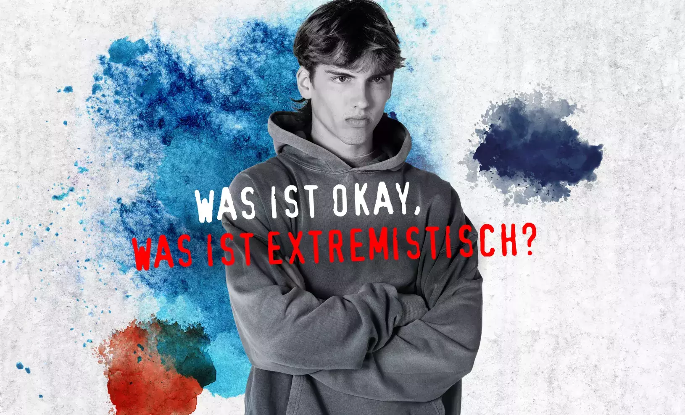

Angebot
Wegweiser-Projekt
Beratung und Prävention in Bonn, im Rhein-Sieg-Kreis und im Kreis Euskirchen.
Was ist Wegweiser?
Wegweiser ist ein Präventionsprogramm des Landes Nordrhein-Westfalen. Die Beratungsstelle Bonn unterstützt Menschen bei Fragen zu Radikalisierung und islamistischem Extremismus. Die Beratung ist kostenlos, freiwillig und vertraulich.
Für wen sind wir da?
Das Angebot richtet sich an Jugendliche und junge Erwachsene, Familien, Bezugspersonen sowie Schulen, Vereine und Fachkräfte.
Unser Angebot
Das Team bietet individuelle Beratung, vermittelt bei Bedarf weitere Unterstützung und organisiert Informationsveranstaltungen sowie Workshops. Ziel ist es, Radikalisierung frühzeitig vorzubeugen und gemeinsam Perspektiven zu entwickeln.
Kontakt
Hotline: 0228 1847 8592
E-Mail: wegweiser@evaggmbh.de